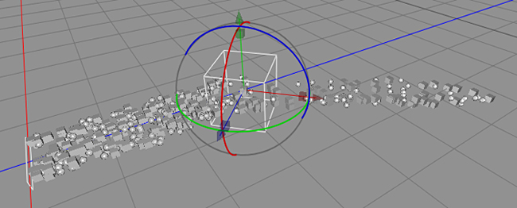

Wind Force effector objects emulate the real world behavior of wind. Used in a scene with particles to create leaves blowing in the wind. Multiple effector types can be used to create even more complex behavior

Wind Force effector object used with a particle emitter to redirect a particle stream.
Properties
Wind speed: The wind speed which causes a force on the particles.